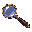
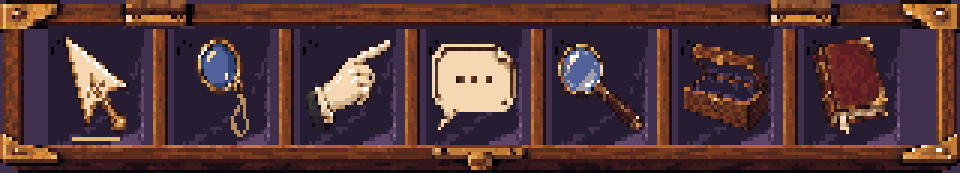
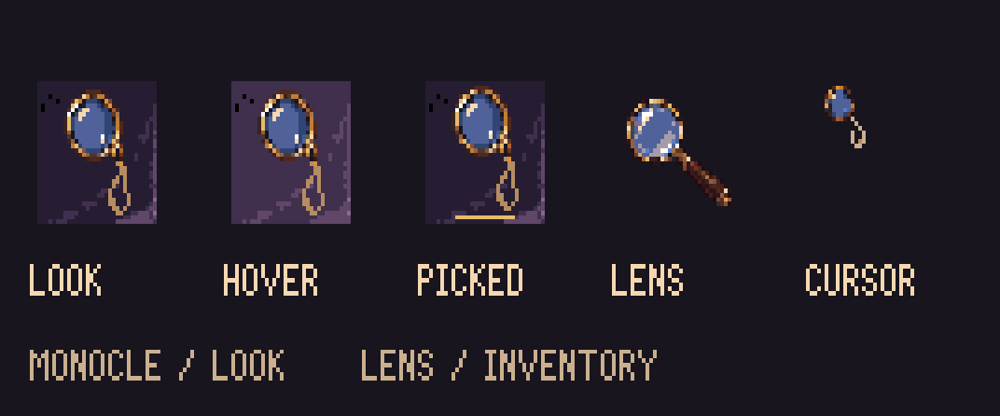

A brass rim and silk cord for the verb; a handled lens for the inventory.

Hover or focus to lighten the velvet. Click to select; click again to clear.


Source and integration notes · Resource mapping · Native export verification